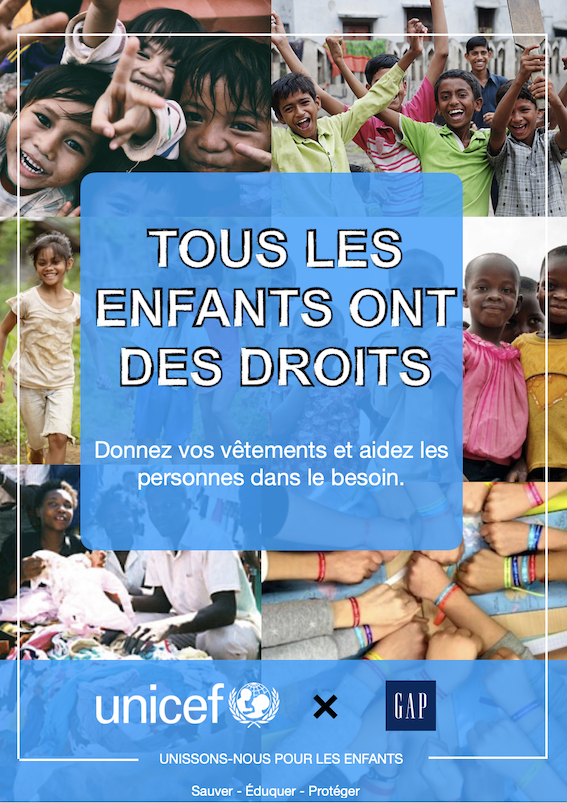

Bienvenue sur mon site
Je m'appelle Inès Bounouh j'ai 19 ans.
Je suis en première année préparatoire à l'IIM.
L'année prochaine je souhaiterais me dirigé dans l'axe "Création & Design".
J'ai le plaisir de vous présenter mes 3 projets préférés réalisés depuis le mois de septembre !
Mes projets
Animation 3D
J'ai réalisé un décor fantasy héroic avec des objets phares de Zelda, comme l'épée ou encore le bouclier tricolor, ainsi qu'une texturisation d'une modélisation d'architecture d'intérieur avec une grande diversité de textures ( bois, metal, or, marbre ) sans oublier les jeux de lumières à l'exterieur et à l'intérieur de la maison
Création & Design
Un des projets que j'ai le plus aimé réaliser c'est cette cover d'album du groupe "The Roots" sur Photoshop. C'était la première fois que j'utilisais l'application et je trouve m'en être bien sorti! J'ai utilisé des couleurs qu'on retrouvait souvent sur leur covers d'Album et d'EP qui sont le bleu, une touche de rouge et de jaune ( qui font référence au drapeau de la Pennsylvanie). Mes objectifs cette année seraient de montrer ma détermination et mon côté créatif à travers mes futurs projets.
Plus de détails
Ma cover porte sur le groupe d’artistes The roots composés de 5 membres masculins Afro-Américain venant des quartiers populaires de Philadelphia en Pennsylvanie aux États Unis. C’est un style hip-hop, rap et jazz que nous propose ces avant gardistes dans les années 90/2000 puis mettent en avant le plus souvent deux sujets que se soit dans leurs morceaux ou sur leurs covers : la culture afro américaine et le rôle que joue la société américaine durant cette époque.

Pour finir, avec ma team 7 nous avons présentez un projet en inventant une collaboration entre l'association l'UNICEF et la marque GAP. En effet nous avions fait une étude de marché avec les forces, faiblesses, opportunités et menaces que pouvait faire face notre projet.
Suite à cela, un prototye nous à été imposé et en voici un exemple : j'ai crée une affiche publicitaire sur Photoshop comme étant une stratégie de communication afin de montrer au consommateurs qu'une collaboration est établie entre l'association et l'entrprise pour qu'ils puissent apporter leurs vêtements.
1ère étape : Les magasins GAP récupèrent les vêtements GAP usagés.
2ème étape : Une séléction sera effectué c'est-à-dire que les vêtements en bon état sont mis à part pour être distribués aux personnes dans le besoin tandis que les autres seront recyclés comme fibres industrielles ou autres produits.
3ème étape : Les vêtements seront triés par saison, taille, et genre.
4ème étape : Une livraison déstiné aux personnes dans le besoin sera effectué tout en tenant en compte des spécificités locales (climat, culture et religion).